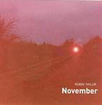

| Artist: | Robin Taylor |
| Title: | November |
| Label: | Marvel of Beauty Records MOBCD 009 |
| Length(s): | 56 minutes |
| Year(s) of release: | 2004 |
| Month of review: | [02/2005] |
| 1) | High NRG | 4.39 |
| 2) | Lowest | 4:00 |
| 3) | Waiting For Something To Happen | 6.18 |
| 4) | A Big Sleep | 9.47 |
| 5) | XR-cism | 4.17 |
| 6) | Rotten PNO/Processed NRG | 3.40 |
| 7) | The Dark Side Of Life | 21.50 |
| 8) | Relief | 1.15 |
Lowest is mainly a very slow percussive track. There is no real melody, mainly a plocking that is quite atmospheric. Laid across this percussion are occasional twangs of acoustic guitar, too far apart to create actual melody. This track would fit nicely on an ECM album.
Waiting For Something To Happen is a-melodic piano, across electronic base with sudden spurts of rhythm and piano and guitar melody. The effect of this is quite odd, but it does work quite well.
The rhythm in A Big Sleep reminds me of Rush's La Villa Strangiato. Although the booklet specifically states no synthesizers were used, the track is based on something sounding much like it, sort of in the vein of early eighties material like Gary Numan or Random Hold. Across this electric guitar is played. The track is more melodic, more rock oriented than the previous ones, setting it quite clearly apart. Still, in its repetition and length there is something minimal about it too.
XR-cism is built around looped guitars, with clear piano laid across. As we progress the guitars snap out of their repetition, changing to experiment.
Rotten PNO is an abstract piano experiment, with no discernable melody suddenly gaining momentum moving into a dancelike section, with rhythm and some tacky sounding keys, abating into guitar experiment.
The Dark Side Of Life is rather minimalistic with an electronic sounding base drone and looping guitars in the back several electronic and acoustic key melodies are played.